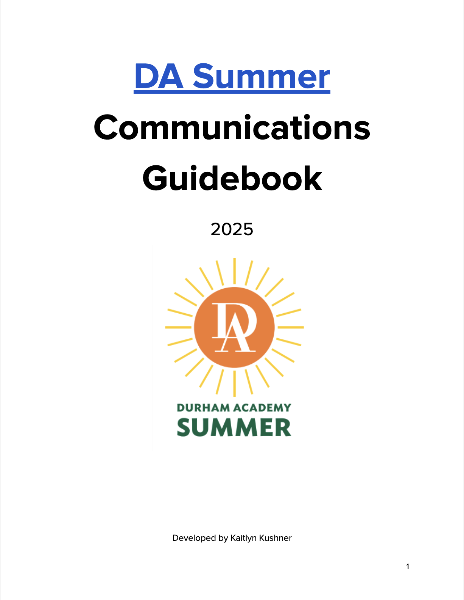

I have held a variety of positions in the Communications field, such as Director Communications at the Ohio-based non-profit, Circle Tail, and the North Carolina-based summer camp, Durham Academy Summer. As the primary point of contact for community members, I ensured seamless direction and project delivery from concept to completion. Additionally, I collaborated with a broad network of internal teams to develop and execute innovative campaigns to widen local and global reach for my clients, all while staying within budgets and timelines. I invite you to preview some of my work below.
Director of Communications at Circle Tail
As the Director of Communications for Circle Tail, I managed both internal and external communications for the non-profit. Specific duties include content creation and publication, website design, communication with community members, photography, videography, inter-enterprise coordination, and more. During my contract, I developed the Circle Tail Communication’s guidebook, which is a handbook that intricately details all the internal communications operations for Circle Tail.
Director of Communications at Durham Academy Summer
As the Director of Communications for Summer Programs at Durham Academy, I managed both internal and external communications for the summer camp. Specific duties included content creation and publication, email and phone correspondence, website design, communication with camp families, writing for the camp blog, photography, videography, overseeing the Communication's Team and more. During my contract, I developed the Durham Academy Summer Communication’s guidebook, which is a handbook that intricately details all operations for the Durham Academy Summer Communications work.
Director of Social Media at the Dynamic Sustainability Lab
In a variety of my Communications positions, I have curated multiple social media presences on a variety of platforms from scratch. The above are examples from my time at Durham Academy Summer, Circle Tail, and the Dynamic Sustainability Lab at Syracuse University. On all platforms, I grew a devoted following, increased reach on an international scale, and upgraded community engagement on a variety of fronts.